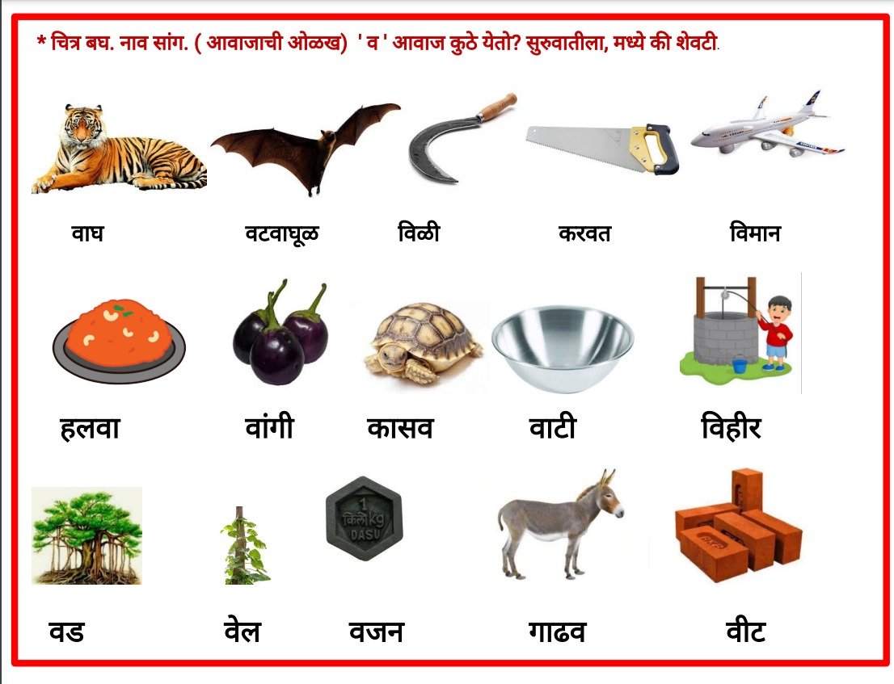
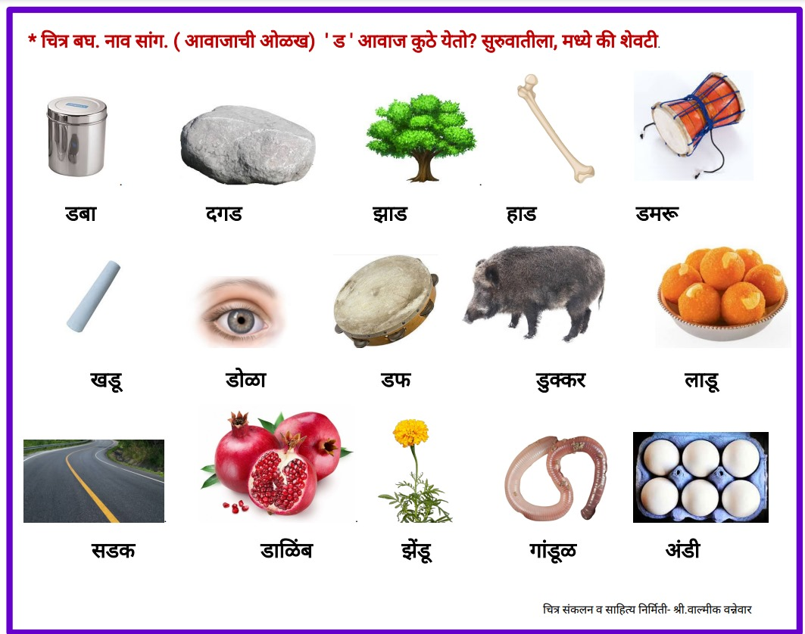
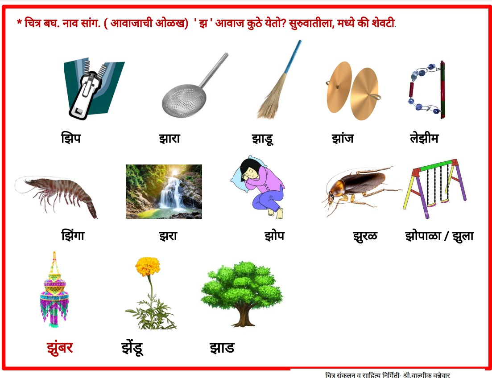
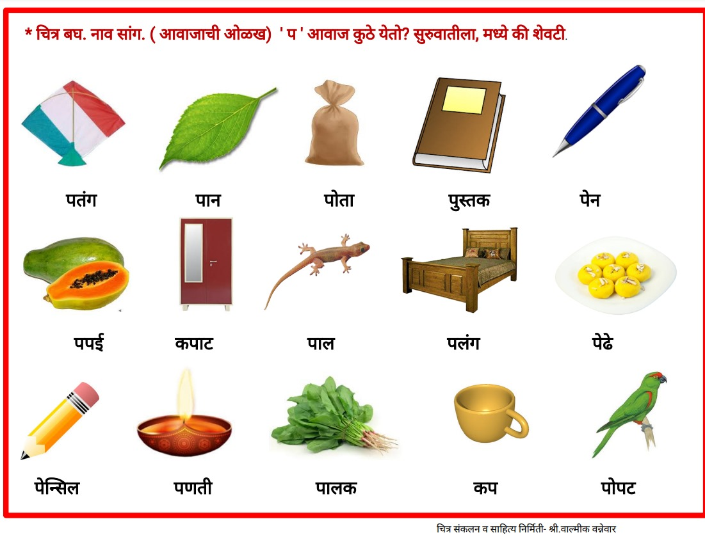
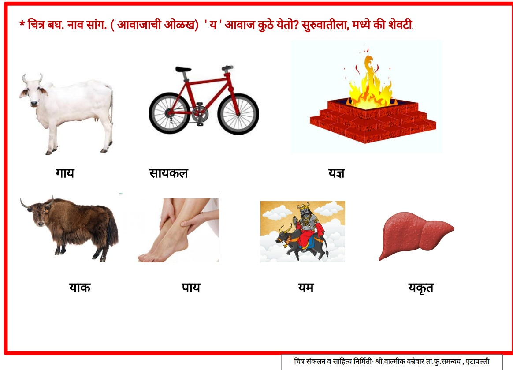
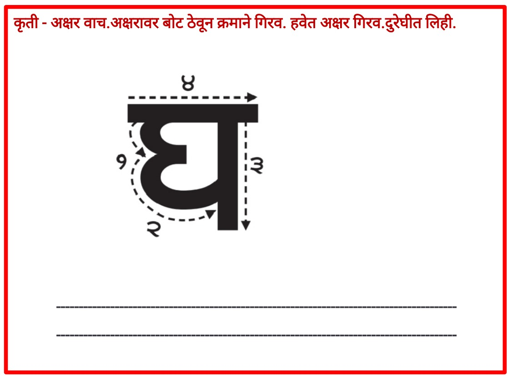
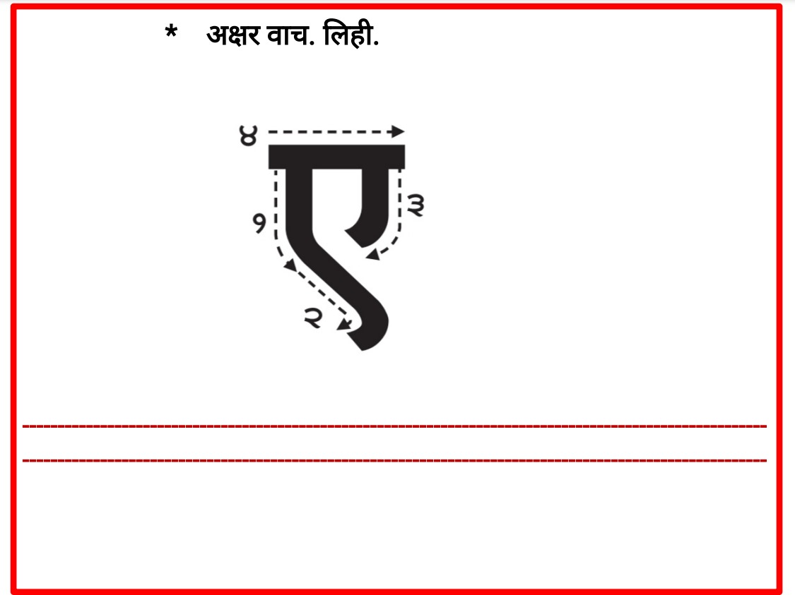
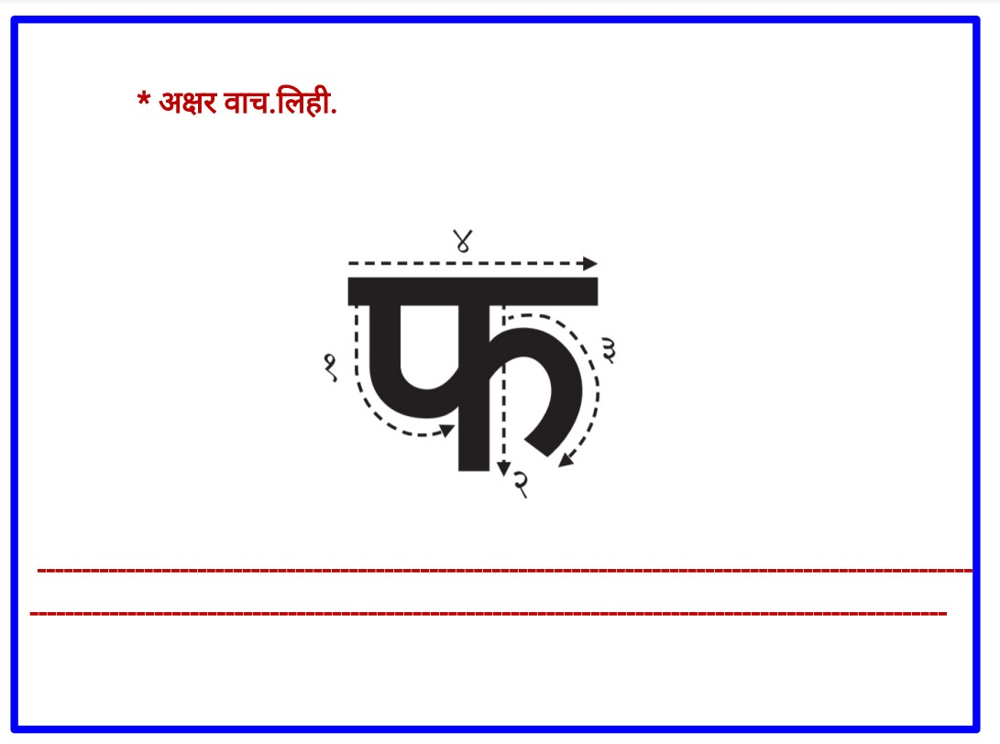

here all फुलोरा material available
welcome

• फुलोरा अक्षरपरिचय क (१)

☛ click here for DOWNLOAD फुलोरा अक्षरपरिचय क (१) PDF
• फुलोरा अक्षरपरिचय म

☛ click here for DOWNLOAD फुलोरा अक्षरपरिचय म PDF
• फुलोरा- अक्षरपरिचय ल

☛ click here for DOWNLOAD फुलोरा- अक्षरपरिचय ल PDF
• फुलोरा- अक्षरपरिचय आ

☛ click here for DOWNLOAD फुलोरा- अक्षरपरिचय आ PDF
• फुलोरा अक्षरपरिचय च (५)

☛ click here for DOWNLOAD फुलोरा अक्षरपरिचय च (५) PDF
• फुलोरा- अक्षरपरिचय न

☛ click here for DOWNLOAD फुलोरा- अक्षरपरिचय न PDF
• फुलोरा अक्षर ई (७)ची ओळख

☛ click here for DOWNLOAD फुलोरा अक्षर ई (७)ची ओळख PDF
•फुलोरा अक्षरपरिचय त (८)

☛ click here to DOWNLOAD फुलोरा अक्षरपरिचय त (८) PDF
•फुलोरा अक्षरपरिचय ह (९)

☛ click here to DOWNLOAD फुलोरा अक्षरपरिचय ह (९) PDF
• फुलोरा अक्षरपरिचय ' व ' (१०)

☛ click here for DOWNLOAD फुलोरा अक्षरपरिचय ' व ' (१०) PDF
• फुलोरा अक्षरपरिचय ' ड ' (११)

☛ click here for DOWNLOAD फुलोरा अक्षरपरिचय ' ड ' (११) PDF
• फुलोरा अक्षरपरिचय ' झ ' (१२)

☛ click here for DOWNLOAD फुलोरा अक्षरपरिचय ' झ ' (१२) PDF
• फुलोरा अक्षरपरिचय प (१३)

☛ click here for DOWNLOAD फुलोरा अक्षरपरिचय प (१३) PDF
• फुलोरा अक्षरपरिचय ' य '(१४)

☛ click here for DOWNLOAD फुलोरा अक्षरपरिचय ' य '(१४) PDF
• फुलोरा अक्षरपरिचय ' घ ' (१५)

☛ click here for DOWNLOAD फुलोरा अक्षरपरिचय ' घ ' (१५) PDF
• फुलोरा अक्षर ए (१६) ची ओळख

☛ click here for DOWNLOAD फुलोरा अक्षर ए (१६) ची ओळख PDF
• फुलोरा अक्षर द (१७) ची ओळख

☛ click here for DOWNLOAD फुलोरा अक्षर द (१७) ची ओळख PDF
• फुलोरा अक्षर फ (१८) ची ओळख

☛ click here for DOWNLOAD फुलोरा अक्षर फ (१८) ची ओळख PDF